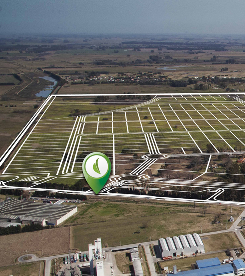

 Sobre las 314 hectáreas de la estancia "El Rezongo", un campo estratégicamente ubicado en las afueras del casco urbano, se desarrolla el Polo Industrial General Rodríguez, Parque Industrial que consolidará el liderazgo de la zona como centro de producción clave de la Provincia de Buenos Aires.
El Polo Industrial General Rodríguez, situado sobre la ruta 24, con cómodas y rápidas conexiones con el Acceso Oeste y la Ruta 6, comercializa 506 lotes para la instalación de inversiones industriales y logísticas.
A partir de la integración con la comunidad local, las empresas que se radiquen en el parque gozarán de beneficios impositivos promocionales, que se sumarán a los privilegios naturales que otorga el emplazamiento del emprendimiento.
Dentro del Polo Industrial General Rodríguez se reservó un área para usos múltiples en lo que fue el casco original de la estancia que, complementado con un sector de servicios externos, redundarán en mayor comodidad para quienes desarrollen sus actividades en las compañías que se instalen en el PI, así como también para la ciudad.
 El crecimiento industrial de la ciudad está relacionado principalmente con la estratégica ubicación de General Rodríguez dentro del mapa de la provincia de
Buenod Aires. La ciudad se encuentra emplazada en la intersección de dos de los corredores viales más importantes de la provincia. Por un lado el acceso oeste (Autopistas
del Oeste), que comunica con CABA, su puerto, ruta 5 y ruta 7. Por el otro, la ruta 6, también conocida como "Ruta del Mercosur", que comunica con los puertos de La Plata
y Zárate; al mismo tiempo sirve de nexo con la ruta 14, vía de ingreso al sur de Brasil.
El crecimiento industrial de la ciudad está relacionado principalmente con la estratégica ubicación de General Rodríguez dentro del mapa de la provincia de
Buenod Aires. La ciudad se encuentra emplazada en la intersección de dos de los corredores viales más importantes de la provincia. Por un lado el acceso oeste (Autopistas
del Oeste), que comunica con CABA, su puerto, ruta 5 y ruta 7. Por el otro, la ruta 6, también conocida como "Ruta del Mercosur", que comunica con los puertos de La Plata
y Zárate; al mismo tiempo sirve de nexo con la ruta 14, vía de ingreso al sur de Brasil.